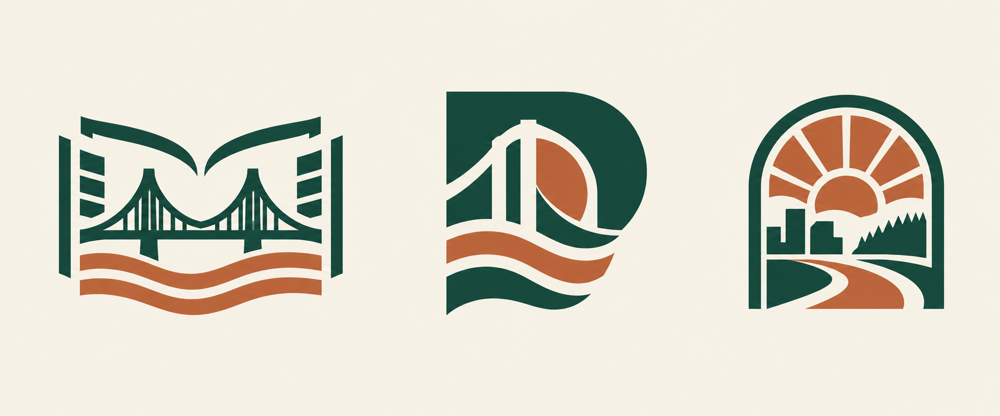

Independent local news · identity exploration
Portland
Daily Brief
Council decisions. Neighborhood change. What happens next.

Recommended direction: the center mark. Its compact bridge-and-river silhouette works for a masthead, feed icon and email header. The left concept emphasizes reporting; the right has a broader city-guide feel. These are concepts awaiting selection, not a finalized or trademark-cleared identity.
Evergreen · #173e36Cream · #f6f1e6Rust · #b65a3b
Working name: Portland Daily Brief. A serif masthead paired with plain sans-serif reading text keeps the news approachable and distinct from a government publication. AI-generated original concept sheet, October 28, 2026.